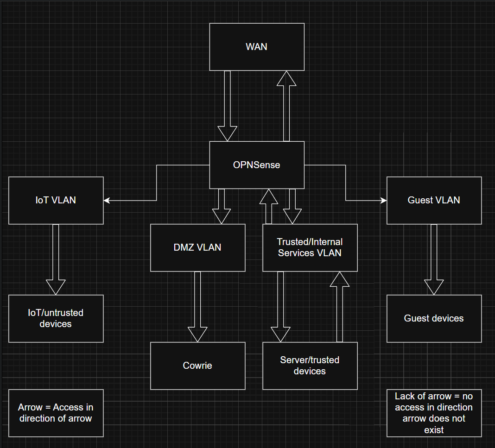
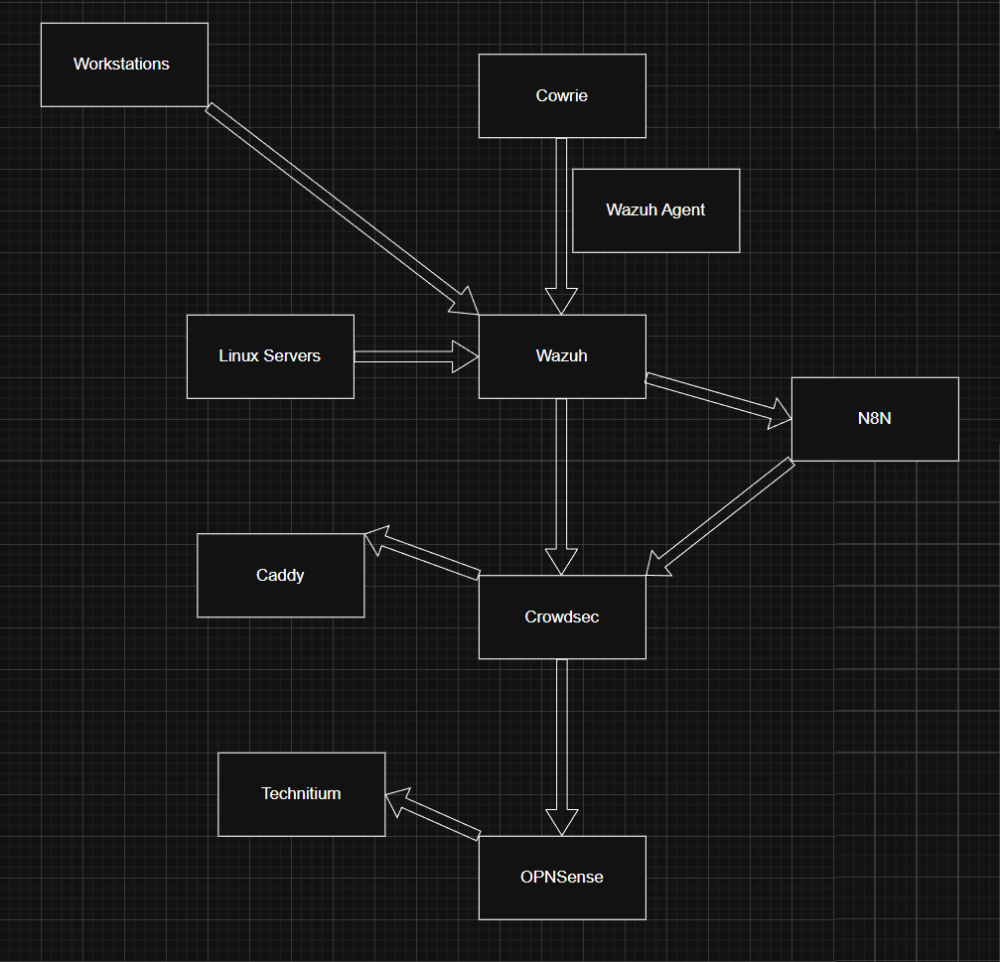

This site documents a self-hosted security lab designed to demonstrate network segmentation, detection engineering, and automated response.
This diagram shows trust boundaries, VLAN segmentation, and enforced access paths within the lab environment.
This diagram illustrates how telemetry flows from sensors through analysis, automation, and enforcement.
Source code and documentation available upon request.